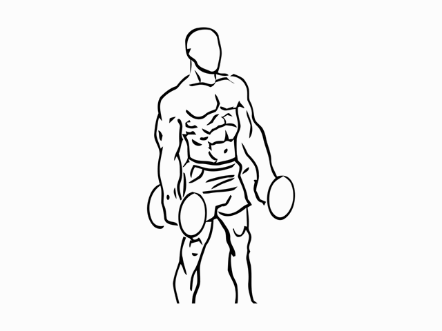

Dos mancuernas
Curl de bíceps con mancuernas
Músculos trabajados: Bíceps y otros flexores del codo.
Trabaja la flexión de codo. Mantener el torso estable facilita que el movimiento dependa de los brazos y no de un impulso de la espalda.
- Series
- 2
- Repeticiones
- 8–12
- Descanso
- 1–2 min
- Margen orientativo
- 2–3 RIR
Ejemplo de partida: adapta la carga a tu técnica y experiencia. Las series de calentamiento no se cuentan aquí.
Cómo hacerlo
- Ponte de pie con los pies separados de forma cómoda y las mancuernas a los lados.
- Coloca las palmas hacia adelante y mantén los codos cerca del torso.
- Flexiona los codos para acercar las mancuernas a los hombros, sin balancearte.
- Baja de forma controlada hasta la posición inicial. Mantén las muñecas estables.
Errores que conviene evitar
- Balancear el cuerpo para subir.
- Mover mucho los codos hacia adelante.
- Doblar las muñecas al sostener el peso.
Si pierdes el control de la bajada, la carga es demasiado alta para esa serie.
Referencia de técnica: ACE: principios del Bicep Curl. Cómo interpretar las series y el RIR.